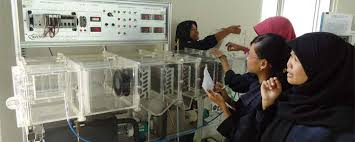

Alamat: jl. lohbener lama no.08, lohbener, indramayu, Legok, Kec. Lohbener, Kabupaten Indramayu, Jawa Barat 45252
| |
TEKNIK INFORMATIKA POLINDRA
Alamat: jl. lohbener lama no.08, lohbener, indramayu, Legok, Kec. Lohbener, Kabupaten Indramayu, Jawa Barat 45252 |
| Home | Menu | Galeri | Berita | Kemahasiswaan | Help |
| VISI DAN MISI TEKNIK INFORMATIKA POLINDRA |
| visi
"Program Studi Terdepan di bidang Teknik Informatika Tingkat Nasional dan Berdaya Saing Global" Misi 1.Meningkatkan mutu, akses, dan relevansi pendidikan Politeknik di bidang Teknik Informatika untuk menghasilkan lulusan sesuai kebutuhan pekerjaan 2.Melakukan penelitian terapan dan pengabdian masyarakat di bidang Teknik Informatika untuk mengatasi persoalan industri dan masyarakat; |
| JURUSAN TEKNIK INFORMATIKA
1.TEKNIK INFORMATIKA(TI) eknik Informatika merupakan salah satu jurusan pendidikan tingkat perguruan tinggi yang mempelajari serta menerapkan prinsip-prinsip ilmu komputer dan analisis matematis dalam perancangan, pengujian, pengembangan, dan evaluasi sistem operasi, perangkat lunak (software), dan kinerja komputer. Dalam kata lain, bidang studi ini akan melakukan pembahasan terkait pengolahan data dengan memanfaatkan teknologi komputer yang menggunakan prinsip dan proses logika. Bila memutuskan untuk memilih jurusan Teknik Informatika, maka kamu akan cukup banyak berkutat dengan pemrograman (programming), pengembangan perangkat lunak (software), dan teknologi jaringan komputer. Pada dasarnya, kamu akan menjadi penerjemah suatu ide yang harus dituangkan dalam bentuk digital menggunakan bahasa pemrograman tertentu. Dalam prosesnya, kamu akan banyak membuat flowchart alias bagan alur bagaimana sebuah sistem dapat berjalan sesuai dengan fungsi dan logikanya. Tentu saja, ketelitian dan keuletan menjadi karakter paling dasar yang harus kamu miliki. |
|
Labotarium lab jarkom lab komdas lab so lab multimedia TI terapan lab pemrogaman lab eldas |
|  | ---Ini adalah ruangan lab yang biasa di gunakan untuk praktek maupun teori yang di lakukan oleh mahasiswa teknik informatika--- |
| from alumni
1. 2. 3. |
| |
(0234) 5746464 | ti@polindra.ac.id | @Teknik_Informatika |